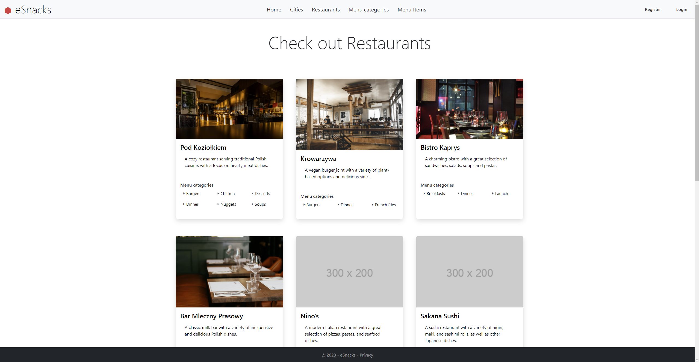

-
Asp.Net Core
A cross-platform, high-performance, open-source framework for building modern, cloud-based, Internet-connected applications.
.NET 6 -
Entity Framework
A lightweight, extensible, open source and cross-platform ORM for .NET applications.
Ver. 6.0.14 -
Microsoft SQL Server
A relational database management system developed by Microsoft. It is a highly scalable, secure, and reliable database system used by businesses of all sizes.
Ver. 2012+ -
Docker
An open platform for developing, shipping, and running applications. It enables developers to easily build, package, and deploy applications as portable containers that can run almost anywhere.
Ver. 3.9
×


The eSnacks app!
eSnacks is a web application that allows users to order food from various restaurants. The application is developed using Asp.Net Core, Entity Framework, and MSSqlServer.
The application supports user registration and login, selecting a city and displaying a list of restaurants in that city, restaurant selection and menu display, adding menu items to the shopping cart, viewing and modifying the shopping cart, placing an order, viewing order history, and managing user profiles.
The application comes with seeded data, including two users, and users can change their password after logging into the application for security purposes.